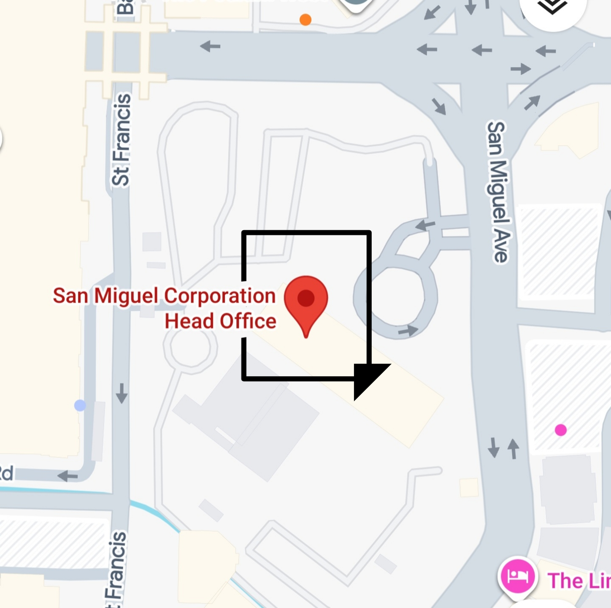
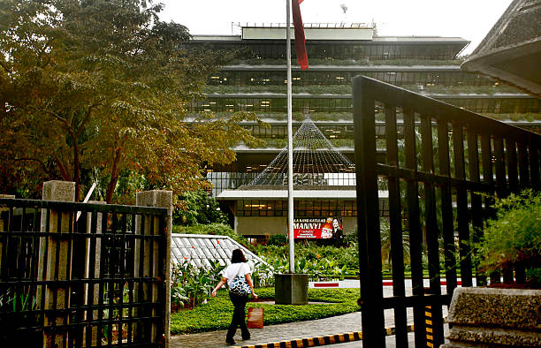

San Miguel Corporation's commitment is to bring quality products to each and every Filipino home has brought together well-loved brands that make everyday life a celebration. No other company in Philippine history has developed such a rich and diverse product portfolio covering the beverage, food, and packaging industries as San Miguel.
Best known for its internationally distributed beer, San Miguel Corporation can only be described in superlatives. It is Southeast Asia's oldest and largest brewer. It also ranks as the Philippines' largest and one of its most consistently profitable companies. San Miguel's flagship beer utterly dominates the Filipino market, with a 90 percent market share. However, San Miguel did not make it to the top of the regional heap on good beer alone. The company also produces agricultural feeds, processed and fresh meats, dairy products, coconut products, hard liquor, nonalcoholic beverages, and packaging products such as glass containers, corrugated cartons, aluminum cans, and metal crowns and caps.
Don Enrique Ma Barretto de Ycaza established the brewery, Southeast Asia's first, in 1890 as La Fabrica de Cerveza de San Miguel. He named the company after the section of Manila in which he lived and worked. By 1913, the company was exporting its namesake brew to Hong Kong, Shanghai, and Guam. San Miguel grew to its commanding position in the Southeast Asian market in spite of political upheaval, infrastructure glitches, and high taxes. It achieved its status through aggressive competitive strategies and shrewd long-range planning over the decades. Having diversified into agribusiness, foods, and packaging in the mid-20th century, the conglomerate dominated its domestic markets by the early 1980s. By the early 2000s, the conglomerate had grown over the course of its more than 110 years in business to generate 3.6 percent of its home country's gross domestic product and 4.5 percent of government tax revenue. Its plant modernization plans involved sweeping improvements, from computerization to quality circles, laying the groundwork to compete with the world's food and beverage multinationals.
San Miguel Corporation's commitment is to bring quality products to each and every Filipino home has brought together well-loved brands that make everyday life a celebration. No other company in Philippine history has developed such a rich and diverse product portfolio covering the beverage, food, and packaging industries as San Miguel.
Best known for its internationally distributed beer, San Miguel Corporation can only be described in superlatives. It is Southeast Asia's oldest and largest brewer. It also ranks as the Philippines' largest and one of its most consistently profitable companies. San Miguel's flagship beer utterly dominates the Filipino market, with a 90 percent market share. However, San Miguel did not make it to the top of the regional heap on good beer alone. The company also produces agricultural feeds, processed and fresh meats, dairy products, coconut products, hard liquor, nonalcoholic beverages, and packaging products such as glass containers, corrugated cartons, aluminum cans, and metal crowns and caps.
Don Enrique Ma Barretto de Ycaza established the brewery, Southeast Asia's first, in 1890 as La Fabrica de Cerveza de San Miguel. He named the company after the section of Manila in which he lived and worked. By 1913, the company was exporting its namesake brew to Hong Kong, Shanghai, and Guam. San Miguel grew to its commanding position in the Southeast Asian market in spite of political upheaval, infrastructure glitches, and high taxes. It achieved its status through aggressive competitive strategies and shrewd long-range planning over the decades. Having diversified into agribusiness, foods, and packaging in the mid-20th century, the conglomerate dominated its domestic markets by the early 1980s. By the early 2000s, the conglomerate had grown over the course of its more than 110 years in business to generate 3.6 percent of its home country's gross domestic product and 4.5 percent of government tax revenue. Its plant modernization plans involved sweeping improvements, from computerization to quality circles, laying the groundwork to compete with the world's food and beverage multinationals.
SMC HEAD OFFICE
40 San Miguel Avenue, Ortigas Center,
Mandaluyong, Metro Manila, Philippines.

